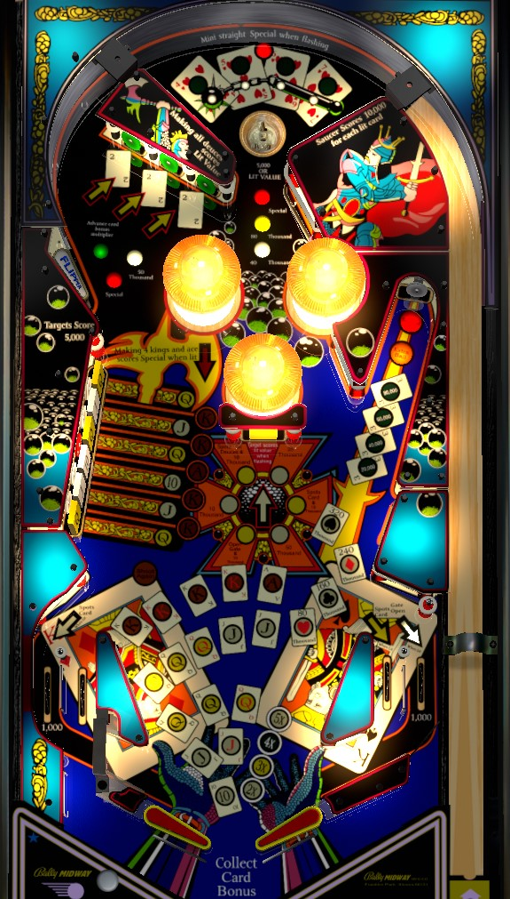

Tiger Rag is a conversion kit for Kings of Steel with identical rules and scoring. It is very rare, but can most notably be played at Past Times Pinball in Girard, OH.
This game is nicknamed Kings of Right Target for a reason. Shoot the right standup (referred to as the 3s Target by the game) repeatedly, get control of the rebound, and repeat. Hitting this target advances is own value up to 200,000 per hit, and also eventually lights itself for extra ball and Special.

Pressing one of the rollover buttons above the saucer lights it. Making the top saucer scores 10,000 points for each lit rollover button, plus the saucer value itself. The saucer value has no initial value, but increases to 40,000 points, then 80,000 points, then Special each time all 4 top rollover buttons are lit. Collecting the Special resets the saucer value to 40,000. If the saucer value has not been advanced and no rollover buttons are lit, the saucer scores 5,000.
At the start of each ball- or only at the start of odd numbered balls, on hard settings- hitting all 4 top rollover buttons on the initial plunge scores a Special. On extra hard settings, this must be done without hitting the right wall that forms the funnel at the top of the game.
The value of the right target is the sum of the lit green lights. It begins at 20,000 points per shot and increases by 20,000 for each subsequent hit.
After being hit for 100,000, the target will light for extra ball; the hit after will be worth 120,000 and continue the pattern.
After being hit for 180,000, the target will light for Special. Any hits to this target after collecting the special are worth 200,000 points.
Extra ball can be set to be worth 25,000 points.
Special can be set to be worth a free game, an extra ball, or 50,000 points.
This target's scoring is extremely overpowered, and it is the only thing that should ever be shot for intentionally in the game. Some copies of Kings of Steel used in tournament play feature a modification that puts a one-way gate in front of this target and cuts part of the side wall, forcing a ball that hits the right target to fall back into the shooter lane for a replunge. This means you need to survive another feed from the top of the table to even have a chance to hit the right target again, which somewhat balances scoring, but can also increase game length.
The left target bank features 6 drop targets in front of 5 standup targets. The drop targets from left to right are Queen-Jack-10-Queen-Jack-Queen. The standup targets from left to right are King-King-Ace-King-King. Hitting any lit target is worth 5,000 points in end of ball bonus. The sequence of which targets are lit is constant: first the single 10, then the pair of Jacks, then the three Queens, then the full house of Queens and Jacks, then the five standup targets. Completing this entire sequence resets it and adds 80,000 points to the super bonus, which maxes out at 320,000 points. After 1, 2, 3, or 4 completions of the entire card sequence, the next completion of the entire card sequence will award a Special.
The upper left standup targets are the Deuce targets, which score 3,000. Hit a target to light it. Lighting all three targets resets them and advances the bonus multiplier, or scores 50,000 if the bonus multiplier is maxed out at 5x. These targets can also be lit to give a Special for the 3rd, 4th, 5th, or 6th completion.
Max bonus is 5x 395,000 = 1,975,000 points. All base bonus is always carried from ball to ball, but bonus multipliers never carry. There is no mid-ball bonus collect. Because only 4 completions of the drop target sequence can be stored, advancing the bonus past 395,000 will reset it to 320,000. Bonus sounds like a meaningful part of scoring, but it takes several orders of magnitude more effort to earn millions from the bonus than it does to earn millions from the right target.
When unlit, the center target scores 3,000. Hitting the right target lights the center target for a rotating value. Hitting the center target when lit awards the rotating value and unlights the target. Awards can be:
On the left, the in and out lane are reversed, with the in lane being near the edge of the table. On the right, the in and out lane are in the usual order; the gate opened by the center target turns the right out lane into a second right in lane, and closes once used or when the ball drains. There is a one-way gate just behind the left flipper hinge preventing the ball from rolling up the flipper toward the in/out lane intersection; this gate is commonly removed in competitive play. In lanes can be lit- either together or alternately based on slingshot hits, depending on game settings- to spot a drop target card. All in/out lanes score 1,000 points.